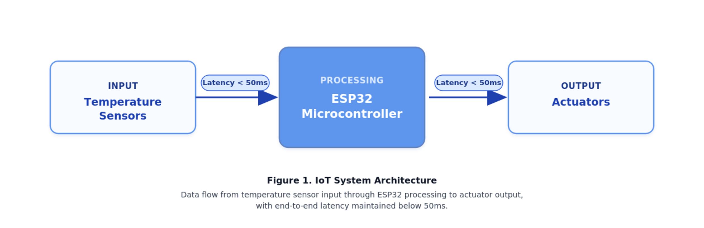

Deskripsi Bidang Keahlian
Fokus penelitian di Departemen Teknik Informatika terbagi ke dalam beberapa kelompok keahlian utama:
- Kecerdasan Buatan (Artificial Intelligence)
- Machine Learning & Deep Learning
- Pemrosesan Bahasa Alami (Natural Language Processing)
- Computer Vision
- Rekayasa Perangkat Lunak (Software Engineering)
- Metodologi Agile & Scrum
- Arsitektur dan Desain Perangkat Lunak
- Pengujian Otomatis (Automated Testing)
- Sistem Siber-Fisik (Cyber-Physical Systems)
- Internet of Things (IoT) & Mikrokontroler
- Keamanan Jaringan
Daftar Publikasi Ilmiah
| Rekapitulasi Publikasi Departemen Teknik Informatika | |||
|---|---|---|---|
| Tahun | Judul Publikasi | Jurnal / Konferensi | Status |
| 2026 | Implementasi Algoritma Deep Learning pada Pengenalan Pola Spasial | IEEE Access | Q1 |
| Optimasi Kinerja Basis Data Terdistribusi pada Sistem Skala Besar | Journal of Software Engineering | Q2 | |
| 2025 | Keamanan Protokol IoT pada Arsitektur Smart Home Cerdas | International Conference on Cybernetics | Terbit |
| Total Publikasi yang Ditampilkan pada Tabel | 3 Publikasi | ||
Metodologi & Deskripsi Riset

Riset ini dikembangkan oleh tim R&D (Research & Development) dengan fokus utama pada perancangan arsitektur sistem mikrokontroler. Selama proses pengujian berlangsung (stress-test), suhu perangkat keras dipertahankan pada kisaran 30°C hingga 45°C. Hasil analisis sementara membuktikan bahwa siklus pemrosesan data dari sensor → aktuator dieksekusi dengan tingkat latensi < 50 milidetik.